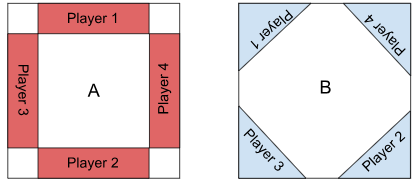

Setup
1. Choosing the layout
The board (3ft x 3ft approximately) layout is chosen from one of the options below:

If the game consists of two players, each player gets two deployment zones (1+3 or 2+4). Otherwise the specified player zone is used.
2. Building your team
Each player (2-4) takes turns to pick a hero for their team consisting of a predetermined amount of heroes (most common 3-5).
3. Soulstone deployment
After characters have been chosen, players should determine the position of the Soulstones on the board.
To do this, one player should take seven 4-sided dice, hold them in a fist, palm down, about 12-16" above the centre of the board, then open their hand so that the dice drop. Leave them where they fall. If any dice fall outside of the 3" x 3" play area, they should be re-dropped from the centre of the board.
The number shown on each die represents the difficulty of harvesting it from the ground and is referred to as the Depth Value.
4. Building the scenery
Terrain placement is done after the soulstones have been deployed to have a more varied board, avoiding a large empty middle area with all the objectives.
Each player takes turns to place one of the available terrain pieces to create an interesting and versatile board. If one player decides to place a terrain piece on top of a soulstone, that soulstone would be placed on top of that piece (for example on the roof of the house you just placed).
5. Team deployment
Alternating turns, each player places one of their heroes in their deployment zones.
The heroes can all be placed together as a single group (3" away from at least one of the members of the group) or into two groups. If the game consists of two players, these groups can be placed in two different deployment zones available for the player.